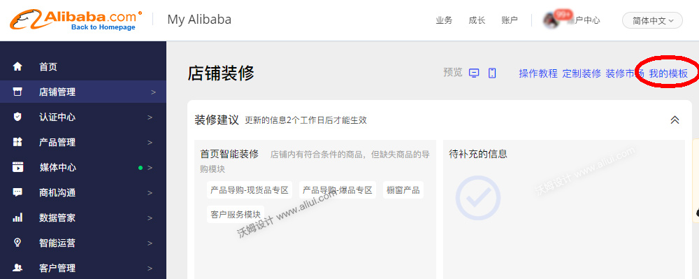
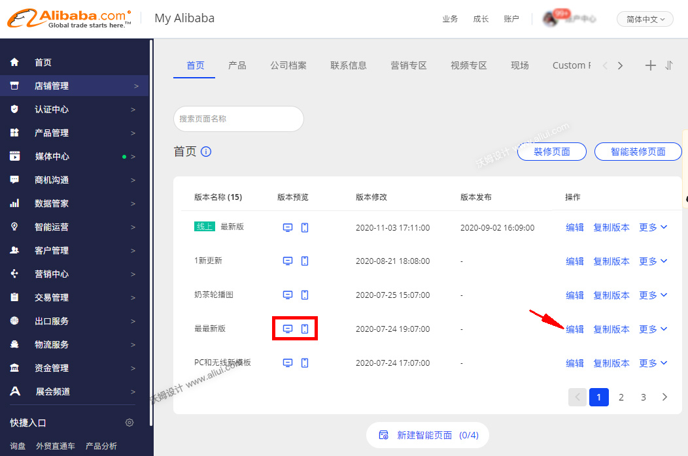
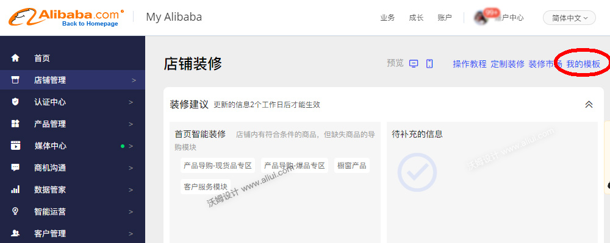
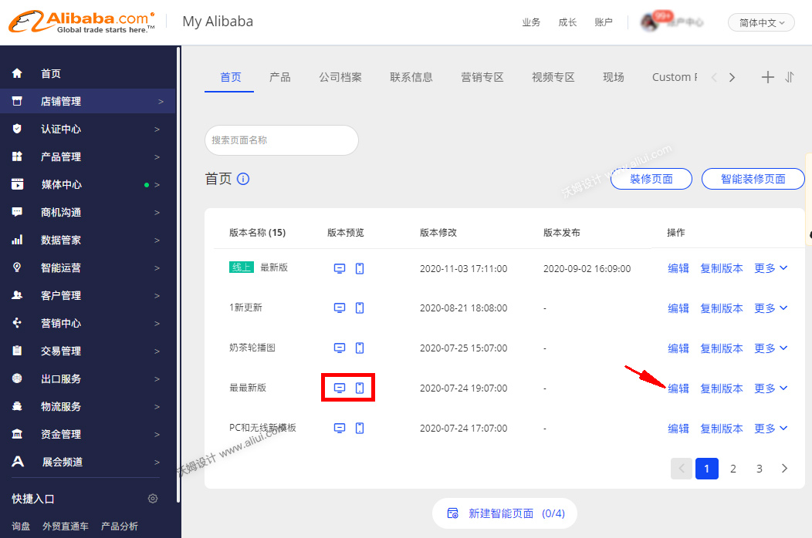

第一步:
在后台“我的模板”中找到已经过期的模板，点击模板缩略图跳转到续费流程，如下图所示：
第二步:
在首页的页面列表里找到模板之前设置的页面，快速找的方法是分别点击页面的2个小图标预览看是不是之前装修的页面。找到之后，点击页面的编辑跳转到装修页面，点击右小角发布按钮即可恢复模板。

 更新：沃姆设计
更新：沃姆设计
在后台“我的模板”中找到已经过期的模板，点击模板缩略图跳转到续费流程，如下图所示：
在首页的页面列表里找到模板之前设置的页面，快速找的方法是分别点击页面的2个小图标预览看是不是之前装修的页面。找到之后，点击页面的编辑跳转到装修页面，点击右小角发布按钮即可恢复模板。
